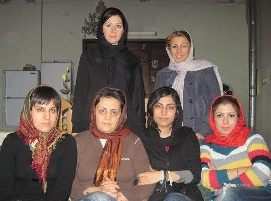
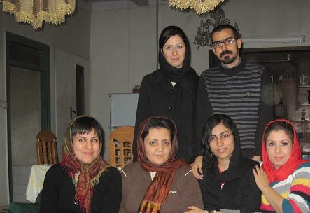

|
|

دیدار تعدادی از فعالان کمپین با محبوبه کرمی پس از حکم قطعی زندان برای وی
سه شنبه19 بهمن 1389
تغییر برای برابری: جمعی از فعالان کمپین یک میلیون امضا، بعد از ابلاغ حکم دادگاه تجدید نظر به دیدار محبوبه کرمی، فعال زنان و حقوق بشر رفتند. محبوبه کرمی، فعال حقوق بشر و کمپین یک میلیون امضا، در شعبه 54 تجدید نظر دادگاه انقلاب به ریاست قاضی موحد به سه سال حبس تعزیری محکوم شده است.

محبوبه کرمی پیش از این در دوران بازداشت خود به افسردگی شدید مبتلا شده بود و با وجودی که طبق گواهی پزشکی قانونی، بیماری وی با رفتن به زندان تشدید می شود، اما قاضی پرونده وی هیچ اهمیتی به این گواهی نداده است. وی در این دیدار از روحیه خوبی برخوردار بود و گفت: از راهی که با اعتقاد قلبی خودم انتخاب کردم، پشیمان نیستم و پای تمام هزینه های آن هم ایستاده ام هرچند این حکم سنگین و ناعادلانه است.
وی افزود: بسیار نگران وضعیت پدر بیمارم هستم ولی از طرفی خود را برای زندگی جدید آماده می کنم.
محبوبه کرمی بعد از فوت مادرش بر اثر سرطان، کلیه مسئولیت های نگهداری از پدر بیمارش را برعهده دارد.

محبوبه کرمی، فعال کمپین یک میلیون امضا، در روز 11 اسفند ماه با هجوم ماموران امنیتی به منزلش بازداشت شد. این در حالی بود که به گفته برادرش، محسن کرمی تاریخ حکم صادره 5 اسفند ماه بوده و اتهام مطرح شده، اغتشاش و شرکت در تجمعات ذکر شده بود در حالی که محبوبه کرمی، سال گذشته بعد از فوت مادرش، تمام وقت خود را به پرستاری از پدر بیمارش گذرانده بود.
محبوبه کرمی پیش از این هم پنج بار بازداشت شده بود. بار اول و دوم در رابطه با درگیری های 18 تیر، بار سوم 24 خرداد 1387 به اتهام اقدام علیه امنیت ملی که پس از 70 روز آزاد شد. باردیگر، 6 فروردین 1388 به همراه 11 تن از اعضای کمپین و مادران صلح که قصد دیدار نوروزی با خانواده زهرا بنی یعقوب را داشتند به اتهام اخلال در نظم عمومی دستگیر و پس از 13 روز آزاد شد. در همه پرونده های فوق، حکم تبرئه برای وی صادر شده بود.